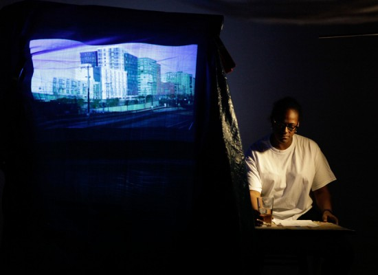
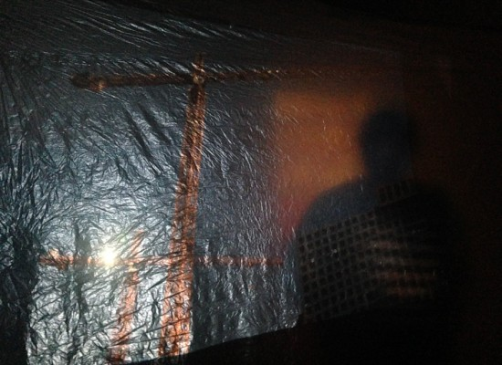

The Price of Salt


The Price of Salt is a deconstructed essay film that weaves images and stories of Kampala and San Francisco to create a meditation on home inside of wide sweeping change.
- Director
- Emily Mendelsohn
- Writers
- Namulyanga Margaret and Emily Mendelsohn
- Moving Image
- Lizzy Brooks
- Dramaturg
- Loren Fenton
- Performers
- Kagusuru Allen, Tebandeke Esther, Loren Fenton, Muwangala Tonny
- Designer
- Shannon Scrofano
The Price of Salt is a work in progress.